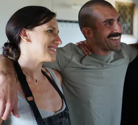

B819 · Fear that paralyzes...
Hi {first_name},
Lately, there have been many changes happening in my life.
For one, I recently got engaged :)
Two, I am going to be a father, HOLY SMOKES!
And that’s not it…(read til the end)
With such big life changes happening, I feel now more than ever that everyday I am waking up a new man.
Close friends have been asking me one question lately, “what is changing with the knowledge that you will be a father?”
While it keeps evolving, here are a few things that I’m present to:

Circling back to the title of this email, I wrote that fear paralyzes…well, as I’m learning, that is the case - until it doesn’t.
There has been one fear I've had over the last 5 years that has really had my feet cemented into the ground…the fear of starting my own podcast.
The truth is it’s not the podcast that scares me, it’s actually what I’ve allowed it to represent… and boy has it felt like a big a$$ monster.
This monster has left me afraid:
But, as I step into fatherhood, I’ve been doing more of an honest inventory of the man I am, and the man I am growing into. While the fear is still there, the pull towards being the best father I can be, has given me the courage to no longer let fear consume and paralyze me.
I believe that sometimes what is in the way, IS the way. It's time that I step up into this opportunity to grow myself and simultaneously provide the best content and information I can by bringing in experts to help elevate your goals and dreams.
I am trusting my path, and I hope you find the strength to trust yours as well.
I’ll be sharing more over the next 6 weeks (podcast launches mid September) as I bring this new podcast creation to life, and I hope you’ll join me for it.
Wishing you all the best and stay tuned, Mike |